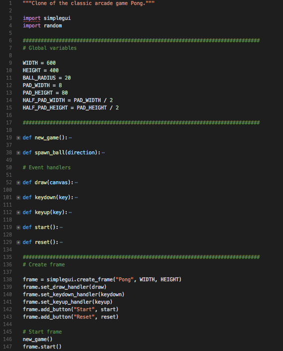

Introduction to Interactive Programming in Python - Week 5
Week 5 marks the final week of the first of two courses in Introduction to Interactive Programming in Python. This week we learn the basics of lists and how to model moving objects in Python.
This week's mini project is recreating the classic arcade game "Pong".
Lists: Lists are one of the most common sequence types in Python. They allow us to group together a collection of objects, and refer to that collection of objects with a single variable. We use the square brackets [] to create a list in Python. Inside of these brackets, we can store pretty much any type of object, including integers, strings, other lists, or nothing at all (i.e., an empty list). To get the length of a list, we can use Python's "len" function. For example, if a_list = ['a', 'b', 'c''], then len(a_list) is 3. We can also manipulate lists in much the same way as we can strings, such as accessing individual elements of lists using indexing or slicing techniques. Unlike with strings, however, we can also change the elements in lists. For example, to change the second element of a_list to the integer 42, we would do a_list[1] = 42 (recall that indexing starts at 0 in Python). Now, a_list = ['a', 42, 'c']. We can do this because lists are a mutable data type, whereas strings are immutable. Other types of immutable data include Booleans and numbers. Lists are extremely important in programming, and this week's lecture just briefly introduces this common data structure.
Modeling Motion: The lectures in Week 3 and Week 4 introduced the concept of event-driven programming, where event-handler functions are executed when certain events occur. The events in prior weeks included button events and timer events. This week introduces keyboard events, which allow us to execute event-handler functions by registering these functions with specific keys on the keyboard (e.g., UP, RIGHT, DOWN, LEFT arrow keys). Keyboard events allow us to control our program with the keyboard, which will allow us to start building much more interactive programs. This week also introduces how to model motion in Python, which involves a small amount of physics and calculus.
Motion: In physics, motion is a change of position of an object over time. In previous weeks, we learned how to create a canvas and draw an object (e.g., string, number, picture, etc.) on the canvas. Now that we understand the list data structure, we can represent the position of that object as a list of its x and y coordinates (i.e., number of pixels in the horizontal and vertical directions from the top-left corner of the canvas), like [x, y]. Recall that anytime we draw an object on a canvas in Python, the computer is rapdily refreshing its frame buffer at a frequency determined by its refresh rate, expressed as a number per second. Thus, we can use seconds as a convenient time interval. Furthermore, we also know how to create a timer event to keep track of time in our programs. As a result, we can model motion by changing the [x, y] position of an object on our canvas over time. If we flip the equation for motion around, we can derive the equation for position: position = velocity * time. Note that an object's velocity is simply the rate of change of its position over time (e.g., 25 mph). Mathematically, the equation for position is: p(t+1) = p(t) + (1)(v(t)), where p is position, t is time, and v is a constant velocity (Note that we can increase or decrease the velocity my multiplying it by a scalar constant). Implementing this code in Python would look like: p[0] = p[0] + v[0] and p[1] = p[1] + v[1].
Collisions and Reflections: In Pong, players control vertically-moving paddles to hit a moving ball back and forth. Therefore, in addition to understanding ball physics and modeling motion in Python, it's also necessary to understand how to model collisions and reflections to avoid having a moving ball drift off the canvas. The ball object in our Pong project will have a center point p and radius r. To detect a collision of the ball with the left or right wall, for example, we'll need to check the following - Left wall: p[0] <= r (i.e., ball collides with left wall when its center p is r pixels away from the left edge of the canvas) and Right wall: p[0] >= width - r. To model a reflection of the ball, we'll need to update the ball's velocity vector (i.e., direction) when it collides with a paddle or wall. For example, we'll need to do the following to reflect the ball off of the left paddle: v[0] = -v[0] (i.e., flips the x direction) and v[1] = v[1] (i.e., keeps the same y direction).
Mini Project 5
This week's mini project is building a clone of the classic arcade game Pong. The image below shows how I organized the functions in my implementation of Pong - notice there are really only a few parts to this program: intializing global variables, writing event handlers and a couple functions to start a new game, and creating and starting a frame.

Creating and Starting Frame: The first thing we need to do is create a canvas to draw the objects in our Pong game, such as the ball and paddles, and create a GUI with buttons to start and reset the game. In CodeSkulptor, the built-in GUI library is called simplegui. In Python there are several different libraries you can use for creating GUI applications, such as Tkinter. The syntax will likely vary a little bit from library to library, but the overall concepts are the same. Notice that the create_frame function takes as parameters the global variables WIDTH and HEIGHT. All of the global variables are capitalized to signify that we don't want our functions to modify their values.
spawn_ball and new_game: The new_game() function initializes a bunch of global variables. Note that these global variables are in lower case, to differentiate them from the global variables whose values shouldn't be modified by any function. These global variables include the scores as well as the positions and velocities of the ball and paddles, which will be modified by the event handlers as players play the game. The spawn_ball(direction) function randomly sets the velocity of the ball in either the left or right direction. Note that ball_vel[1] is a negative value regardless of whether the direction is "left" or "right". This will cause the ball to move towards the top of the canvas in either direction every time a new game starts or a player scores a point.
Event Handlers: There are three types of events in this implementation of Pong: keyboard events, button events, and drawing events. Keyboard events and button events are more straightforward than drawing events, so we'll deal with those first.
Keyboard events: In Pong, we use the "w" and "up" and "s" and "down" keys to move the left and right paddles up and down, respectively. To move the paddles, we increase their velocities when the keys are pressed, and set their velocities to zero when the keys are unpressed.
Button events: In my implementation of Pong in Python, I included two buttons: one to start the game and another to reset the game. The start event handler randomly chooses "left" or "right" as the direction parameter to pass to the spawn_ball function. The reset event handler simply calls the new_game function and sets the value of the global variables score1 and score2 to zero.
Drawing events: There are a few objects we'll need to draw to the canvas to create our Pong program, including static items like lines and text, a ball object whose velocity will change throughout the game, and paddles that will move up and down at a constant velocity when certain keys are pressed.
Static items: To draw the mid line and gutters, as well as the scores, on the canvas we simply need to use the draw_line and draw_text methods, respectively.
Ball: To draw the ball on the canvas, we use the draw_circle method. We also need to update the position of the ball every time the draw handler is called - this will have the effect of making the ball look like it's in continuous motion. However, in reality the computer is simply refreshing its buffer 60+ times per second, and each time it draws the ball in a different position on the canvas. In the code snippet below, notice that we're making sure that the ball stays on the screen by detecting any collisions with the top and bottom of the canvas, and reflecting the ball upon collisions by negating its velocity vector. This is what causes the ball to bounce off the top and bottom edges of the screen rather than drift away.
Paddles: We draw the paddles the same way we draw the mid line and gutters - by using the draw_line function. Similarly, we keep the paddles on the screen just like we kept the ball from drifting beyond the top and bottom of the canvas. The most interesting part of this entire program is writing the logic for detecting collisions between the ball and the paddle. This code says when there's a collision between the ball and the left or right edge, check whether that collision is between the top and bottom of the paddle on that side of the canvas. If it is, then we'll change the direction of the ball and increase the ball's velocity (in this case, by 25%). Otherwise, we adjust the scores and the ball respawns in the center of the canvas and shoots off in the direction of the scoring player.